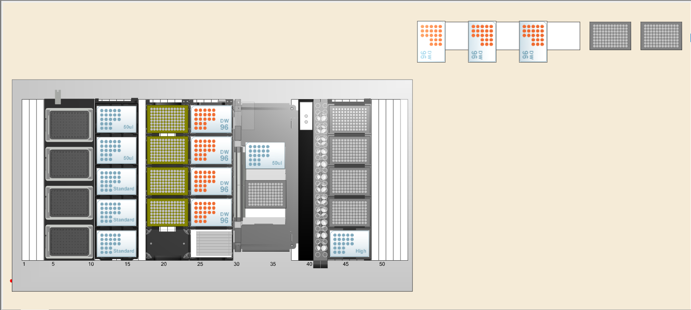

Inoculation Protocol#
Method#
Layout#

Worklist Generation#
import numpy as np
import matplotlib.pyplot as plt
import pandas as pd
Definition of experiemnt parameters#
rows = ['A', 'B', 'C', 'D', 'E', 'F', 'G', 'H']
columns = list(range(1, 12+1))
replicates = 3
blanks = 3
plate = [f'{j}{i}' for i in columns for j in rows]
total_volume = 100
Definition of species#
species = ['EF', 'FP', 'BO', 'CD', 'DI', 'EL', 'BU', 'AC', 'GH', 'IJ', 'KL', 'MN', 'OP', 'QR', 'ST', 'UV', 'WX', 'YZ']
species_order = dict(zip(species, plate[:len(species)]))
species_order
{'EF': 'A1',
'FP': 'B1',
'BO': 'C1',
'CD': 'D1',
'DI': 'E1',
'EL': 'F1',
'BU': 'G1',
'AC': 'H1',
'GH': 'A2',
'IJ': 'B2',
'KL': 'C2',
'MN': 'D2',
'OP': 'E2',
'QR': 'F2',
'ST': 'G2',
'UV': 'H2',
'WX': 'A3',
'YZ': 'B3'}
Difining order of community#
communities = ['FP', 'FP-EL-CD', 'FP-EL-CD-BO', 'FP-EL-CD-BO-DI', 'FP-EL-CD-BO-DI-EF', 'FP-EL-CD-BO-DI-EF-BU', 'FP-EL-CD-BO-DI-EF-BU-AC', 'FP-EL-CD-BO-DI-EF-BU-AC-GH', 'FP-EL-CD-BO-DI-EF-BU-AC-GH-IJ', 'FP-EL-CD-BO-DI-EF-BU-AC-GH-IJ-KL', 'FP-EL-CD-BO-DI-EF-BU-AC-GH-IJ-KL-MN', 'FP-EL-CD-BO-DI-EF-BU-AC-GH-IJ-KL-MN-OP', 'FP-EL-CD-BO-DI-EF-BU-AC-GH-IJ-KL-MN-OP-QR', 'FP-EL-CD-BO-DI-EF-BU-AC-GH-IJ-KL-MN-OP-QR-ST', 'FP-EL-CD-BO-DI-EF-BU-AC-GH-IJ-KL-MN-OP-QR-ST-UV', 'FP-EL-CD-BO-DI-EF-BU-AC-GH-IJ-KL-MN-OP-QR-ST-UV-WX', 'FP-EL-CD-BO-DI-EF-BU-AC-GH-IJ-KL-MN-OP-QR-ST-UV-WX-YZ']
communities_order = []
well = 0
dummy = 0
for i in range(len(communities)):
for j in range(1, replicates + 1):
while well % len(plate) < blanks:
communities_order.append(('blank', well % len(plate) +1, plate[well % len(plate)], int(well / len(plate)) + 1))
dummy += 1
well += 1
communities_order.append((communities[i], j, plate[well % len(plate)], int(well / len(plate)) + 1))
dummy += 1
well += 1
communities_order
[('blank', 1, 'A1', 1),
('blank', 2, 'B1', 1),
('blank', 3, 'C1', 1),
('FP', 1, 'D1', 1),
('FP', 2, 'E1', 1),
('FP', 3, 'F1', 1),
('FP-EL-CD', 1, 'G1', 1),
('FP-EL-CD', 2, 'H1', 1),
('FP-EL-CD', 3, 'A2', 1),
('FP-EL-CD-BO', 1, 'B2', 1),
('FP-EL-CD-BO', 2, 'C2', 1),
('FP-EL-CD-BO', 3, 'D2', 1),
('FP-EL-CD-BO-DI', 1, 'E2', 1),
('FP-EL-CD-BO-DI', 2, 'F2', 1),
('FP-EL-CD-BO-DI', 3, 'G2', 1),
('FP-EL-CD-BO-DI-EF', 1, 'H2', 1),
('FP-EL-CD-BO-DI-EF', 2, 'A3', 1),
('FP-EL-CD-BO-DI-EF', 3, 'B3', 1),
('FP-EL-CD-BO-DI-EF-BU', 1, 'C3', 1),
('FP-EL-CD-BO-DI-EF-BU', 2, 'D3', 1),
('FP-EL-CD-BO-DI-EF-BU', 3, 'E3', 1),
('FP-EL-CD-BO-DI-EF-BU-AC', 1, 'F3', 1),
('FP-EL-CD-BO-DI-EF-BU-AC', 2, 'G3', 1),
('FP-EL-CD-BO-DI-EF-BU-AC', 3, 'H3', 1),
('FP-EL-CD-BO-DI-EF-BU-AC-GH', 1, 'A4', 1),
('FP-EL-CD-BO-DI-EF-BU-AC-GH', 2, 'B4', 1),
('FP-EL-CD-BO-DI-EF-BU-AC-GH', 3, 'C4', 1),
('FP-EL-CD-BO-DI-EF-BU-AC-GH-IJ', 1, 'D4', 1),
('FP-EL-CD-BO-DI-EF-BU-AC-GH-IJ', 2, 'E4', 1),
('FP-EL-CD-BO-DI-EF-BU-AC-GH-IJ', 3, 'F4', 1),
('FP-EL-CD-BO-DI-EF-BU-AC-GH-IJ-KL', 1, 'G4', 1),
('FP-EL-CD-BO-DI-EF-BU-AC-GH-IJ-KL', 2, 'H4', 1),
('FP-EL-CD-BO-DI-EF-BU-AC-GH-IJ-KL', 3, 'A5', 1),
('FP-EL-CD-BO-DI-EF-BU-AC-GH-IJ-KL-MN', 1, 'B5', 1),
('FP-EL-CD-BO-DI-EF-BU-AC-GH-IJ-KL-MN', 2, 'C5', 1),
('FP-EL-CD-BO-DI-EF-BU-AC-GH-IJ-KL-MN', 3, 'D5', 1),
('FP-EL-CD-BO-DI-EF-BU-AC-GH-IJ-KL-MN-OP', 1, 'E5', 1),
('FP-EL-CD-BO-DI-EF-BU-AC-GH-IJ-KL-MN-OP', 2, 'F5', 1),
('FP-EL-CD-BO-DI-EF-BU-AC-GH-IJ-KL-MN-OP', 3, 'G5', 1),
('FP-EL-CD-BO-DI-EF-BU-AC-GH-IJ-KL-MN-OP-QR', 1, 'H5', 1),
('FP-EL-CD-BO-DI-EF-BU-AC-GH-IJ-KL-MN-OP-QR', 2, 'A6', 1),
('FP-EL-CD-BO-DI-EF-BU-AC-GH-IJ-KL-MN-OP-QR', 3, 'B6', 1),
('FP-EL-CD-BO-DI-EF-BU-AC-GH-IJ-KL-MN-OP-QR-ST', 1, 'C6', 1),
('FP-EL-CD-BO-DI-EF-BU-AC-GH-IJ-KL-MN-OP-QR-ST', 2, 'D6', 1),
('FP-EL-CD-BO-DI-EF-BU-AC-GH-IJ-KL-MN-OP-QR-ST', 3, 'E6', 1),
('FP-EL-CD-BO-DI-EF-BU-AC-GH-IJ-KL-MN-OP-QR-ST-UV', 1, 'F6', 1),
('FP-EL-CD-BO-DI-EF-BU-AC-GH-IJ-KL-MN-OP-QR-ST-UV', 2, 'G6', 1),
('FP-EL-CD-BO-DI-EF-BU-AC-GH-IJ-KL-MN-OP-QR-ST-UV', 3, 'H6', 1),
('FP-EL-CD-BO-DI-EF-BU-AC-GH-IJ-KL-MN-OP-QR-ST-UV-WX', 1, 'A7', 1),
('FP-EL-CD-BO-DI-EF-BU-AC-GH-IJ-KL-MN-OP-QR-ST-UV-WX', 2, 'B7', 1),
('FP-EL-CD-BO-DI-EF-BU-AC-GH-IJ-KL-MN-OP-QR-ST-UV-WX', 3, 'C7', 1),
('FP-EL-CD-BO-DI-EF-BU-AC-GH-IJ-KL-MN-OP-QR-ST-UV-WX-YZ', 1, 'D7', 1),
('FP-EL-CD-BO-DI-EF-BU-AC-GH-IJ-KL-MN-OP-QR-ST-UV-WX-YZ', 2, 'E7', 1),
('FP-EL-CD-BO-DI-EF-BU-AC-GH-IJ-KL-MN-OP-QR-ST-UV-WX-YZ', 3, 'F7', 1)]
Worklist generation#
# fill the plate
worklist = {
'Source_plate_Name': [],
'Source_Plate_Type': [],
'Source_Plate_Well': [],
'Desination_plate_Name': [],
'Destination_Plate_Type': [],
'Destination_Plate_Well': [],
'Transfer_Volume': []
}
worklist
for community, replicate, well, plate in communities_order:
if community == 'blank':
worklist['Source_plate_Name'].append('media')
worklist['Source_Plate_Type'].append('Media_Reservoir')
worklist['Source_Plate_Well'].append('A1') # costumize
worklist['Desination_plate_Name'].append(f'96raw-{plate}')
worklist['Destination_Plate_Type'].append('RCK_NormalizationPlate')
worklist['Destination_Plate_Well'].append(well)
worklist['Transfer_Volume'].append(total_volume)
else:
for sp in community.split('-'):
worklist['Source_plate_Name'].append('96raw')
worklist['Source_Plate_Type'].append('RCK_CulturePlate')
worklist['Source_Plate_Well'].append(species_order[sp])
worklist['Desination_plate_Name'].append(f'96raw-{plate}')
worklist['Destination_Plate_Type'].append('RCK_NormalizationPlate')
worklist['Destination_Plate_Well'].append(well)
worklist['Transfer_Volume'].append(total_volume/len(community.split('-')))
worklist_df = pd.DataFrame(worklist)
worklist_df.head(10)
| Source_plate_Name | Source_Plate_Type | Source_Plate_Well | Desination_plate_Name | Destination_Plate_Type | Destination_Plate_Well | Transfer_Volume | |
|---|---|---|---|---|---|---|---|
| 0 | media | Media_Reservoir | A1 | 96raw-1 | RCK_NormalizationPlate | A1 | 100.000000 |
| 1 | media | Media_Reservoir | A1 | 96raw-1 | RCK_NormalizationPlate | B1 | 100.000000 |
| 2 | media | Media_Reservoir | A1 | 96raw-1 | RCK_NormalizationPlate | C1 | 100.000000 |
| 3 | 96raw | RCK_CulturePlate | B1 | 96raw-1 | RCK_NormalizationPlate | D1 | 100.000000 |
| 4 | 96raw | RCK_CulturePlate | B1 | 96raw-1 | RCK_NormalizationPlate | E1 | 100.000000 |
| 5 | 96raw | RCK_CulturePlate | B1 | 96raw-1 | RCK_NormalizationPlate | F1 | 100.000000 |
| 6 | 96raw | RCK_CulturePlate | B1 | 96raw-1 | RCK_NormalizationPlate | G1 | 33.333333 |
| 7 | 96raw | RCK_CulturePlate | F1 | 96raw-1 | RCK_NormalizationPlate | G1 | 33.333333 |
| 8 | 96raw | RCK_CulturePlate | D1 | 96raw-1 | RCK_NormalizationPlate | G1 | 33.333333 |
| 9 | 96raw | RCK_CulturePlate | B1 | 96raw-1 | RCK_NormalizationPlate | H1 | 33.333333 |